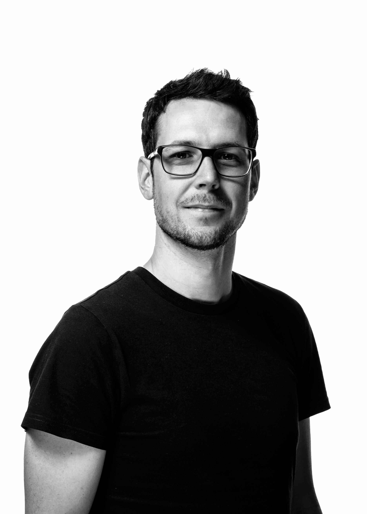
Urban Freuler
Architekt Master of Arts ZFH
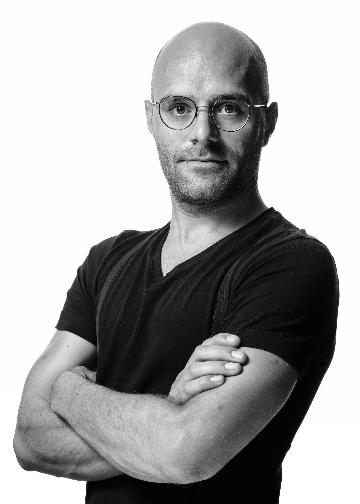
Ralf Eberle
Architekt Master of Arts FHNW / SIA
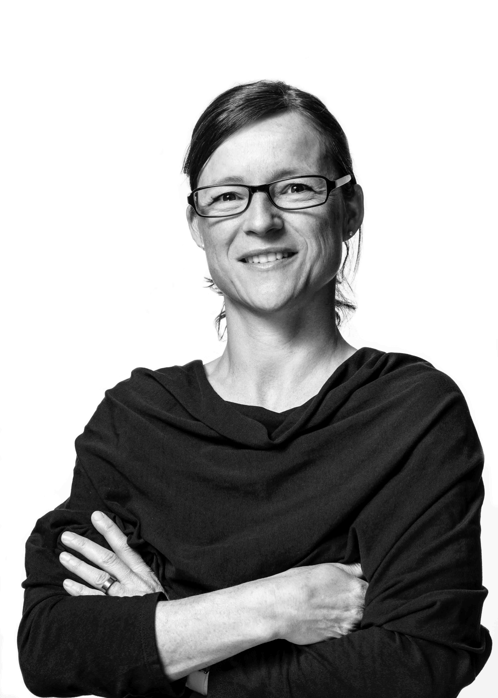
Helena Schenker Ackermann
Dipl. Architektin FH

Stephanie Jäger
Architektin Master of Science
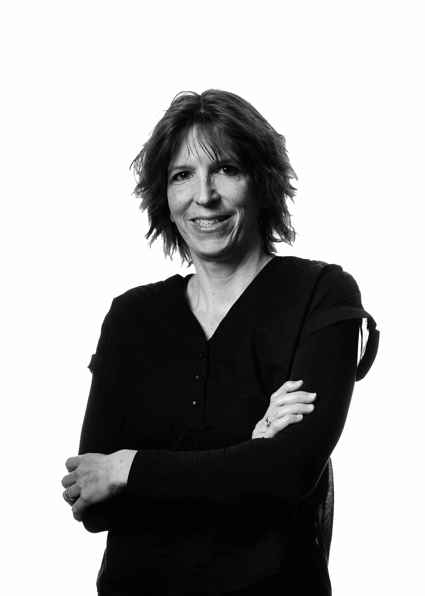
Tanja Gort
Dipl. Hochbautechnikerin
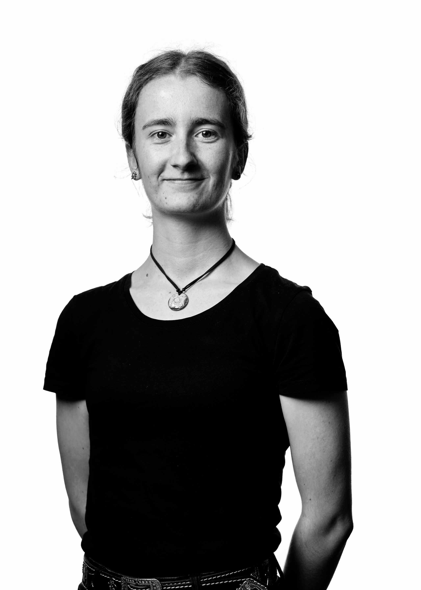
Johanna Zogg
Hochbauzeichnerin Lernende
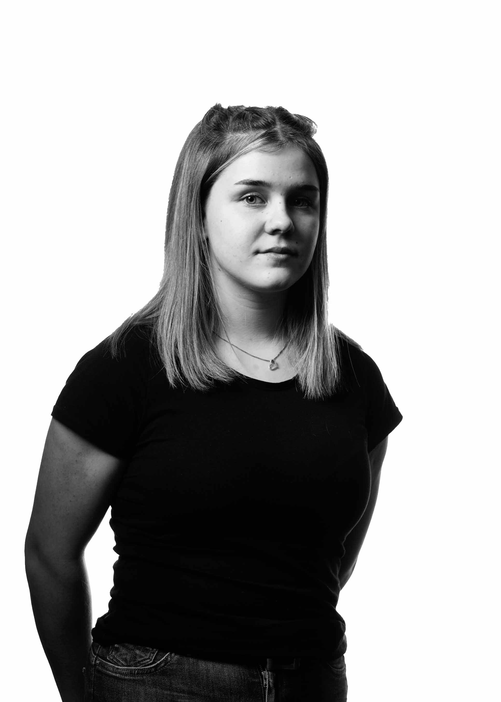
Lena Baumer
Hochbauzeichnerin Lernende
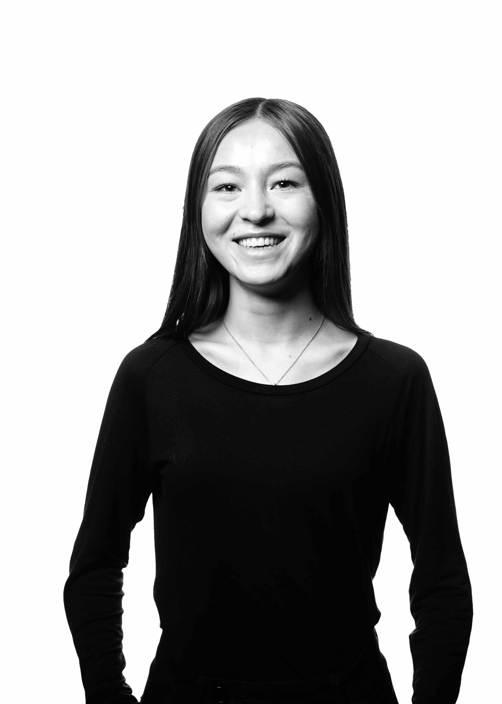
Haida Saramad
Praktikantin
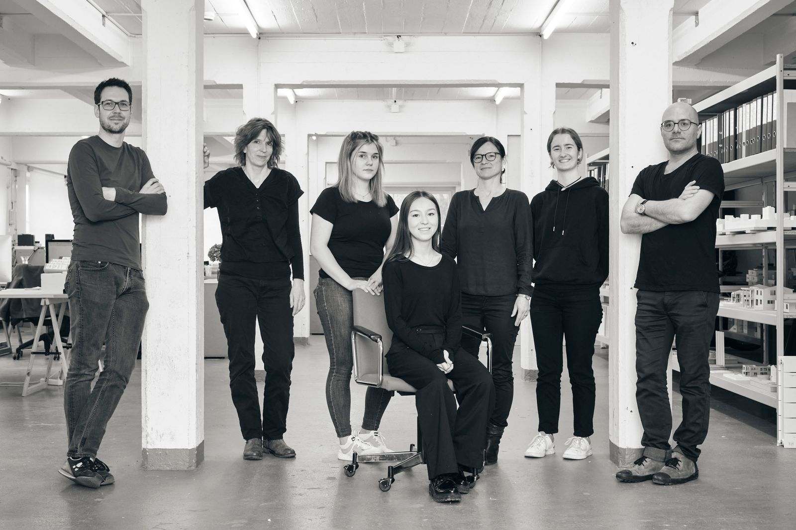
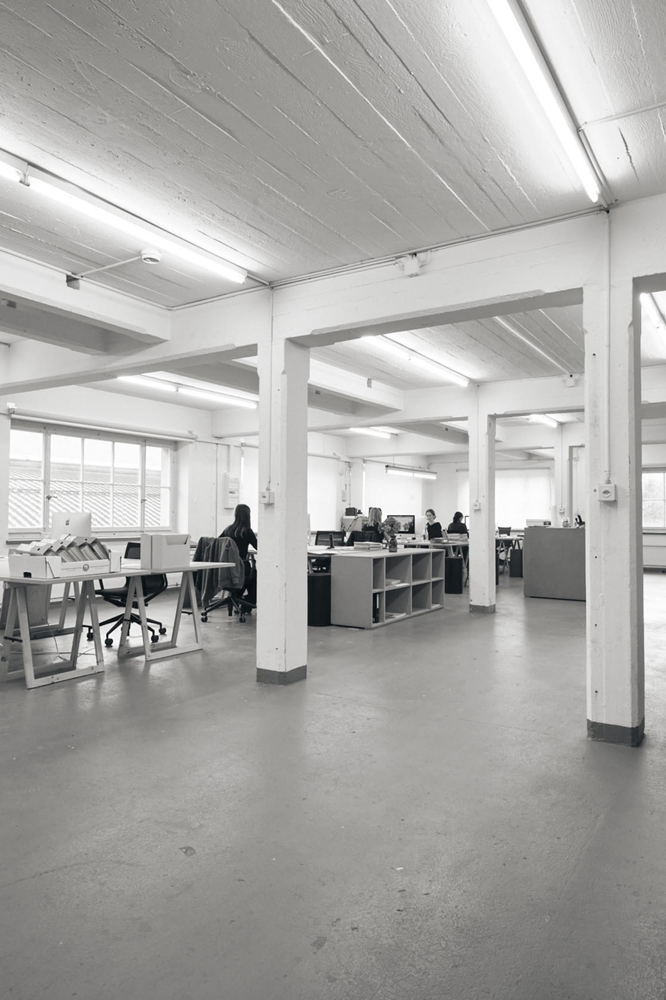
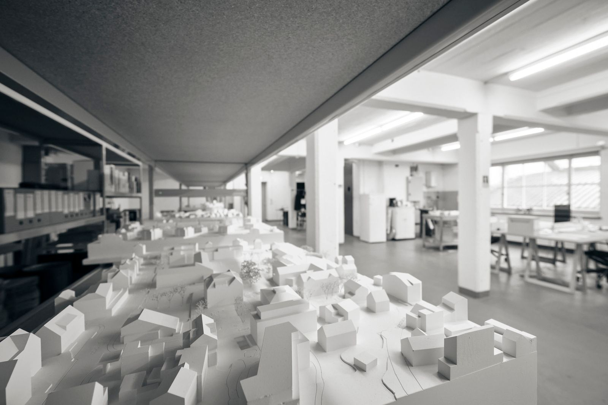
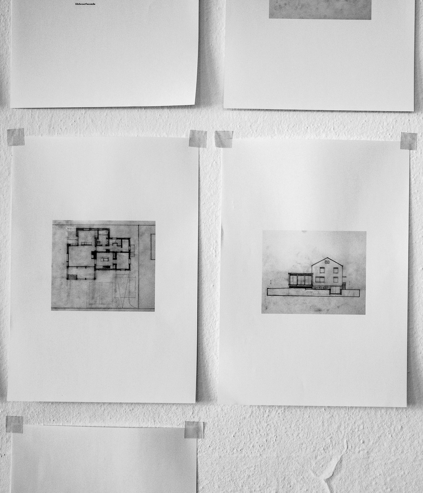
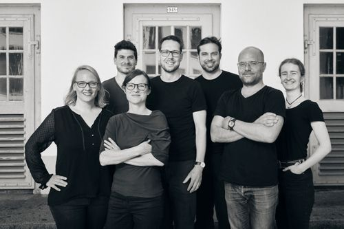
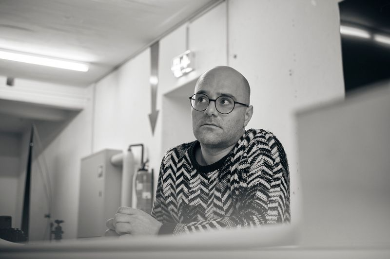
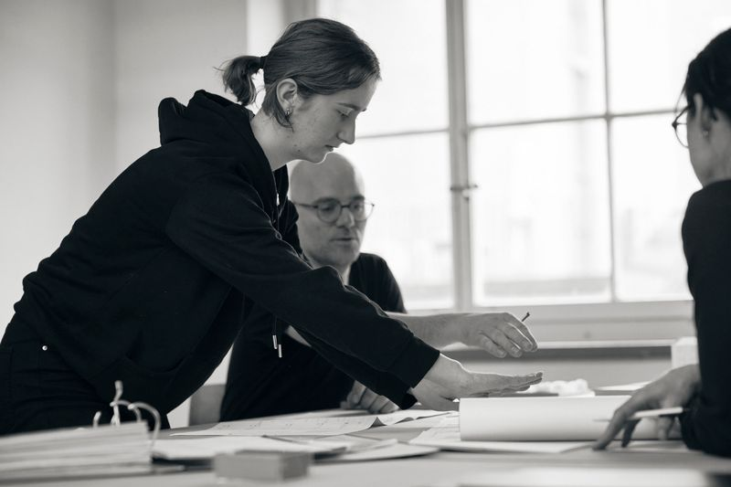
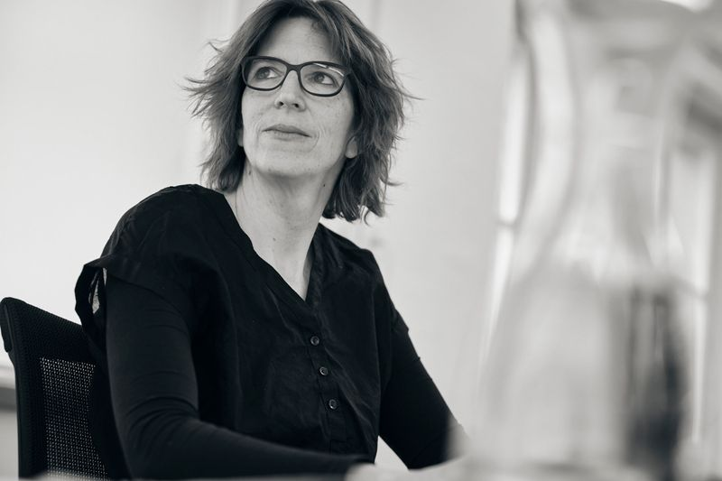